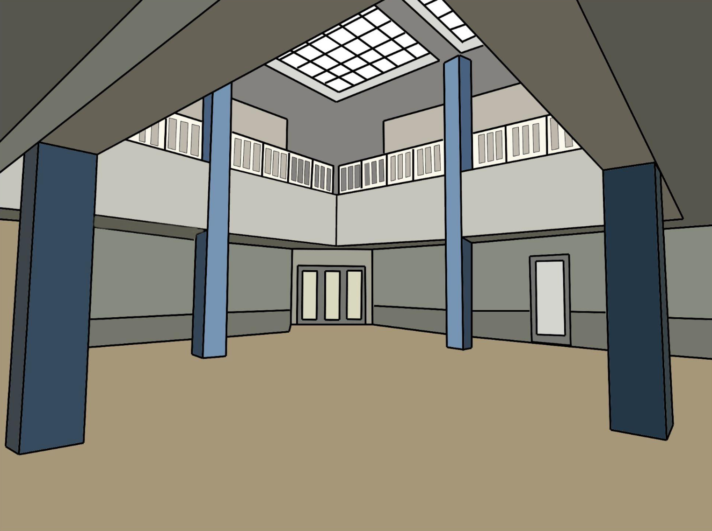
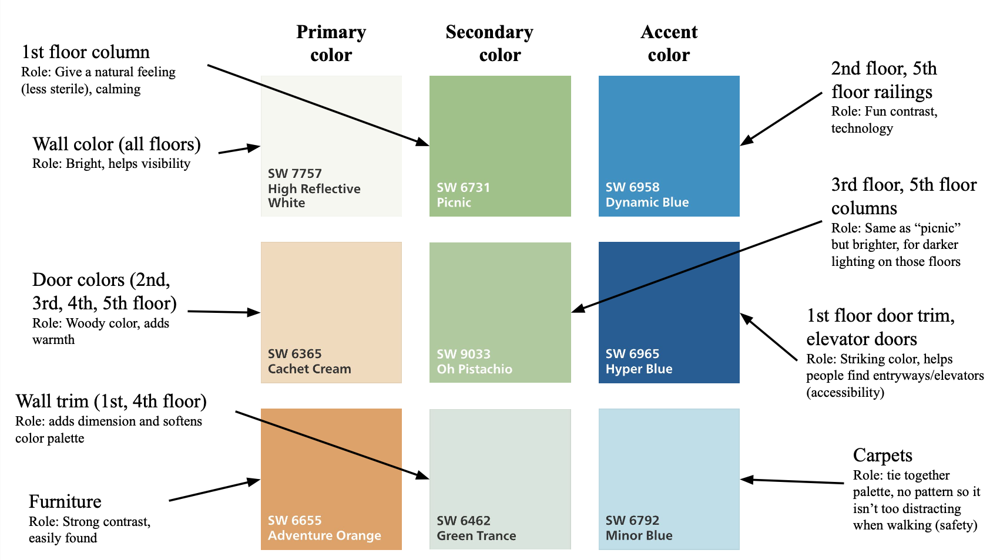
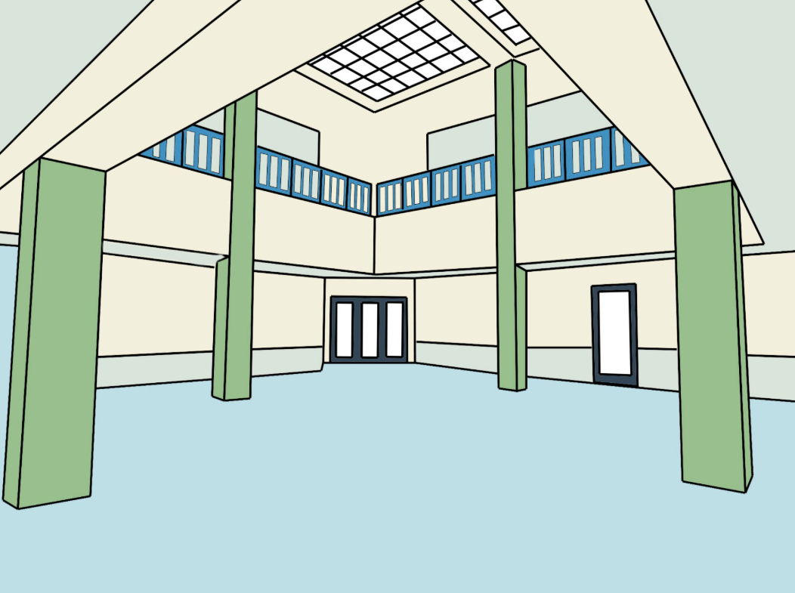

PAINT THE CIT
Background
For this project, I redesigned the visual identity of the CIT (Brown University's Computer Science building), which is going to be repainted in the near future. In this assignment, I proposed a new color palette for the building’s interior based on principles of accessibility, mood, and color functionality.
The CIT acts as a user interface in itself, and this project encouraged us to think about physical space through a design lens, considering how colors influence both usability and emotion. Through exploring the existing layout, evaluating lighting, and experimenting with paint swatches, I developed a palette that improves both the atmosphere and clarity of the space.
My aims for this project were to:
- Learn how color can act as a functional and emotional indicator in physical spaces
- Develop a color palette that balances design, usability, and accessibility
- Explore how light and material interact with color in a multi-floor building
Research
I chose to focus on the main area of the CIT building, the 1st floor atrium, because it is the place most people visit/pass through. This area also has both fluorescent lighting and natural lighting, which will help me ensure that my new colors will work in both types of lighting available throughout the building.
Below is a before picture of the current CIT 1st floor atrium:
To help me visualise the redesign and assess the current state of the interior and its issues, I sketched this image using Adobe Illustrator, color matching the current pallete. Below is my sketch of the before picture, followed my my analysis of the current state:
Colors:
- Grey/beige neutral walls, dark carpeting, and pops of blue (like railings)
- Cooler tones under fluorescent lighting
- Warmer, brighter tones with natural lighting
Color as Functionality:
- Blue pillars evoke technology, fitting for the CIT
- Grey walls are calming, ideal for a study-heavy environment
- Orange furniture stands out, aiding accessibility and seating visibility
What I Like:
- Blue pillars add visual interest amidst grey tones
- White ceiling/skylight area makes the space feel brighter and larger
- Overall color coordination feels cohesive and intentional
What Can Be Improved:
- Carpet pattern is uneven and visually bland
- Grey walls can feel dull and unenergizing
- Colors could be more stimulating and engaging
Design Solution
Here is my proposal for a color palette. It is annotated with justifications and the roles the colors play:
Finally, here is the final sketch with my chosen color palette, followed by an explanation of my design choices:

For my redesigned CIT color palette, I chose colors that are
bright and visually pleasing, but not over-stimulating or harsh.
The wall tints were selected to reflect sunlight and appear
lighter, making the space easy on the eyes under both natural
and fluorescent lighting. The slight green-yellow hue I used
feels warmer and less bland than the original gray. I used blue
accents for the railings, doors, and carpet to maintain
consistency with the original CIT aesthetic but made the tones
bolder to enhance visual interest.
Blue symbolizes
technology, making it a fitting choice for the CS department,
and using it on doors also helps visually guide people to entry
points. Green was chosen to represent focus and
productivity—both important qualities for students in a learning
environment. All the colors I selected are relatively bright to
ensure they remain visible and effective in varying lighting
conditions. The contrast between green and blue is subtle enough
to avoid monotony, while still helping define the space. The
boldness of these shades ensures that even in dim lighting, the
colors won’t cause eye strain.
To confirm the
palette’s harmony, I referenced color schemes from “Coolors”
that included complementary shades of blue, green, and orange.
The redesigned color scheme is calming yet
stimulating—preventing fatigue while still supporting
productivity, especially during long hours spent working at the
CIT. The use of bright orange furniture introduces contrast that
improves accessibility, helping people easily identify seating
areas. The green walls prevent the space from feeling too
sterile, a flaw in the previous gray palette, while the light
blue carpet helps unify the entire space, giving it a friendly
and inviting tone.
Reflection
I really enjoyed working on this project, and I found it much more challenging than I expected to design a cohesive color palette that was both functional and accessible - without feeling bland or boring. Using Adobe illustrate was also a new experience for me, but it worked out well. I was proud of my final design, and I was thrilled when it was selected by the TAs as one of the top 10 in the class. During an in-class vote, my design placed 4th overall, which made me really happy and came as a total surprise!